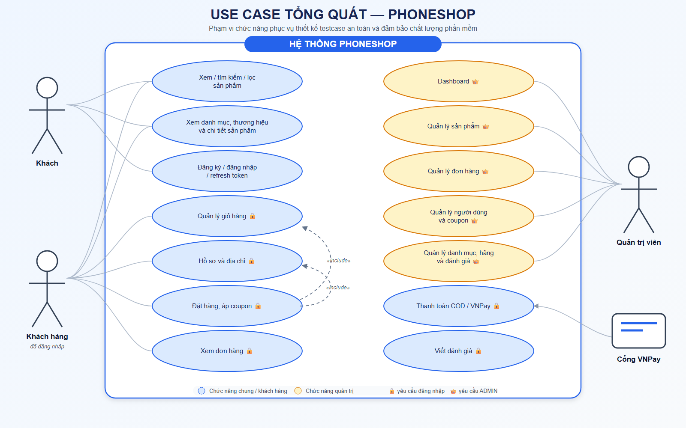
01 · Use case tổng quát
Khách, khách hàng, quản trị viên và VNPay.
13 ảnh: chức năng, nghiệp vụ, bảo mật, API/UI, phi chức năng, database 14 bảng và tiêu chí hoàn tất.

Khách, khách hàng, quản trị viên và VNPay.
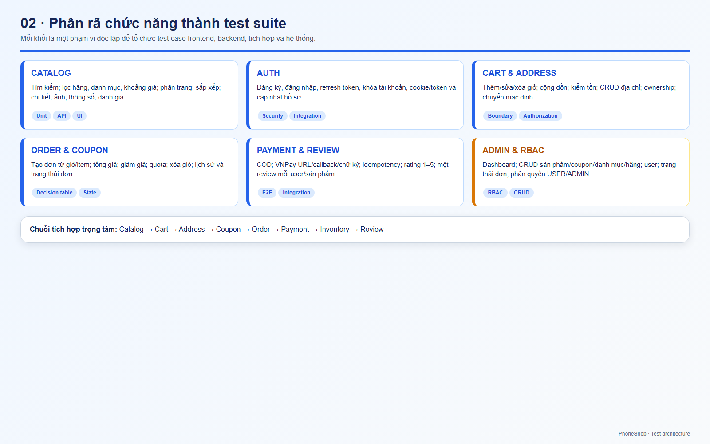
Các module và loại test suite tương ứng.
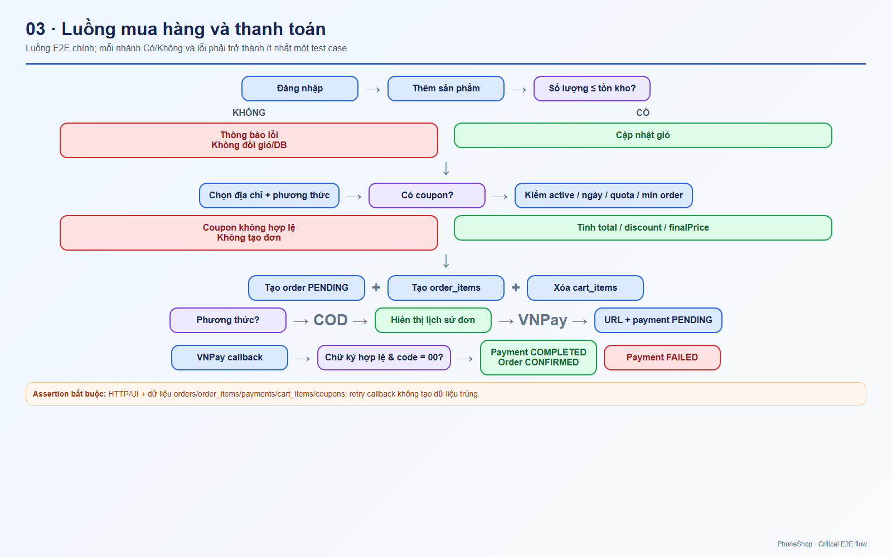
Critical E2E flow, COD và VNPay.
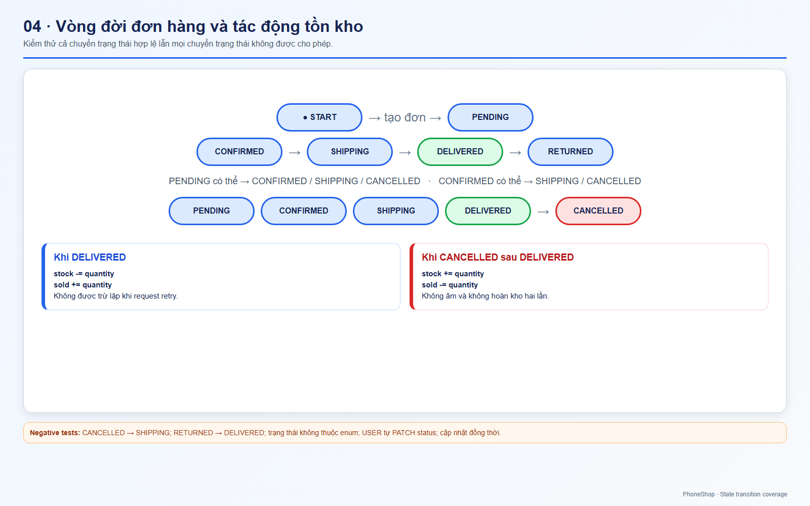
State transition và tác động stock/sold.
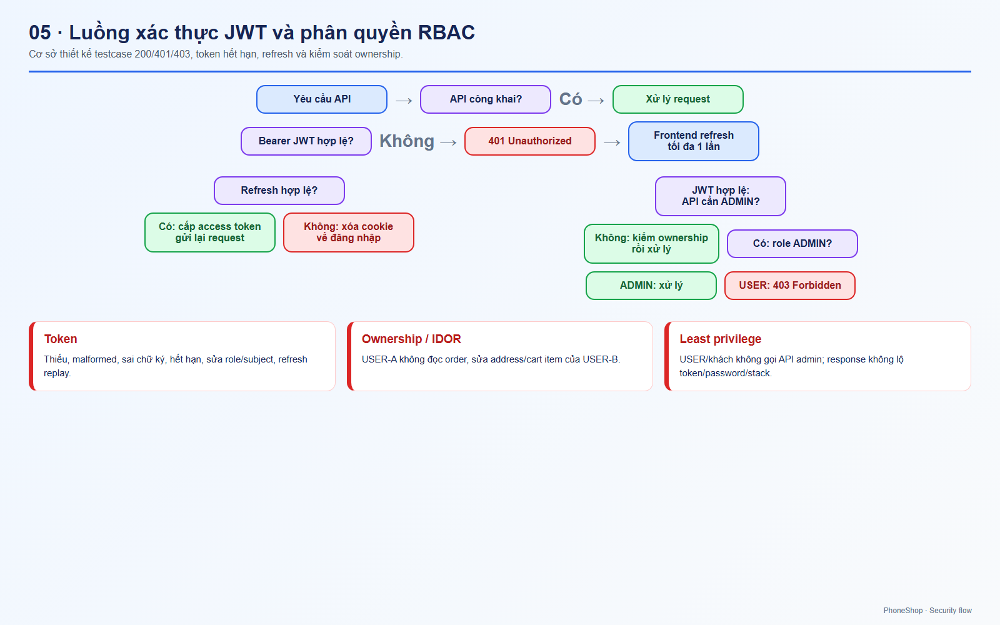
401, 403, refresh token và ownership.
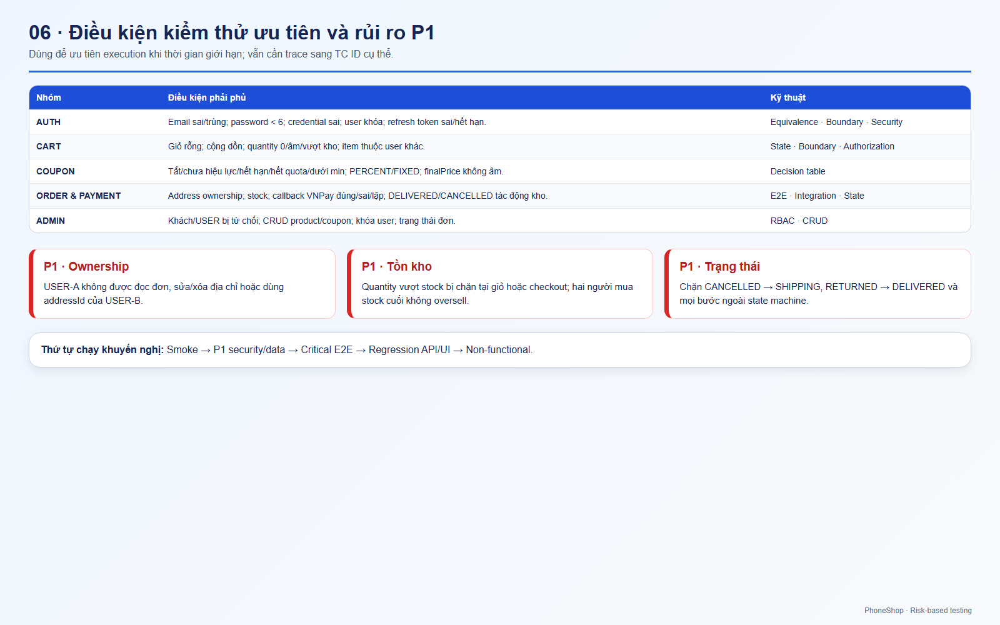
Risk-based testing và các rủi ro P1.
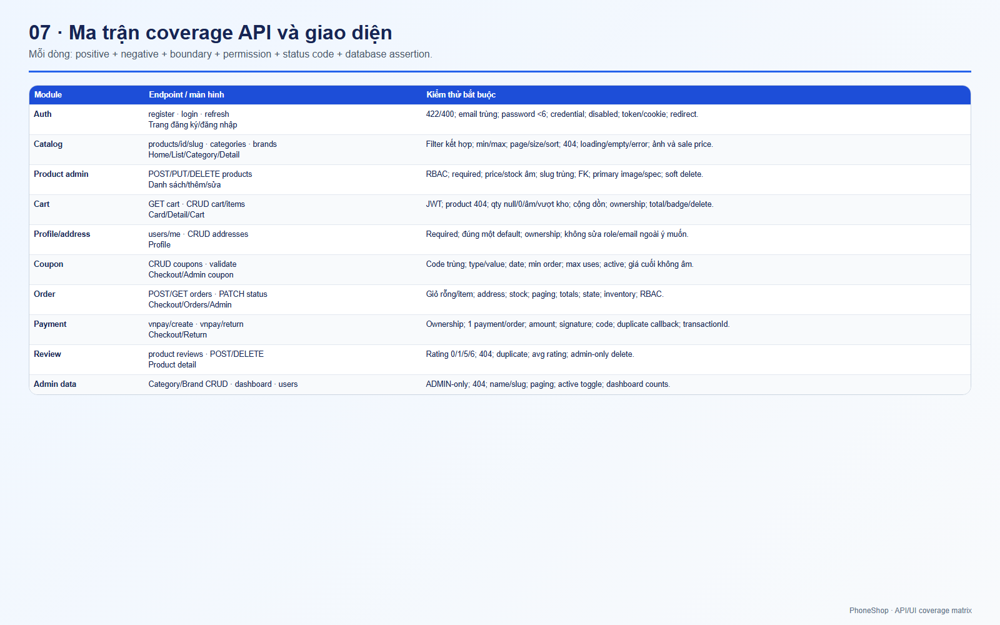
Endpoint, màn hình và assertion bắt buộc.
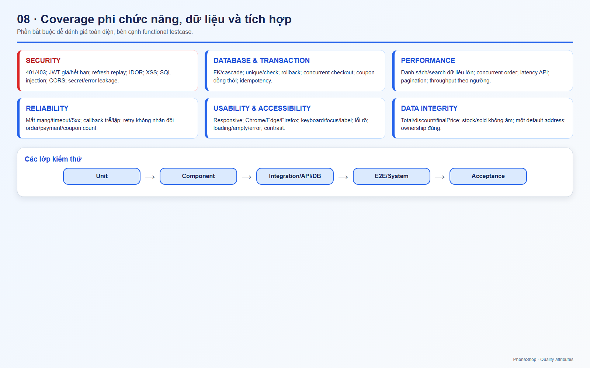
Security, performance, reliability, accessibility và integrity.
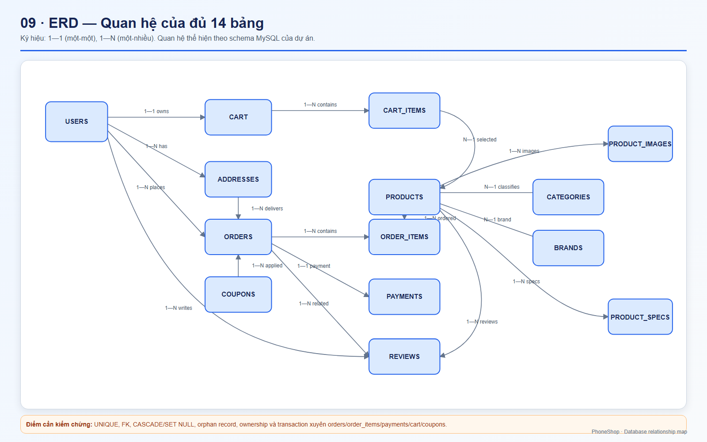
Quan hệ 1—1, 1—N và phạm vi toàn vẹn dữ liệu.
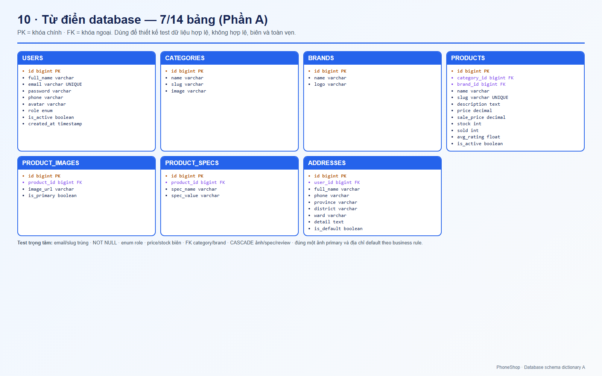
7 bảng đầu cùng PK, FK, UNIQUE và kiểu dữ liệu.
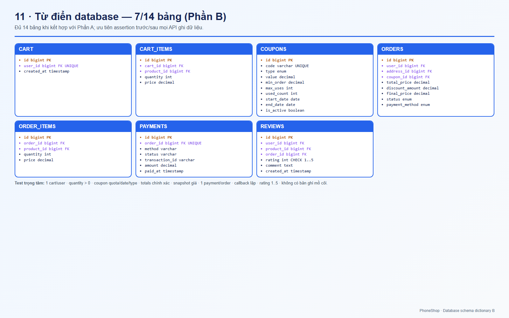
7 bảng còn lại; tổng cộng đủ 14 bảng.
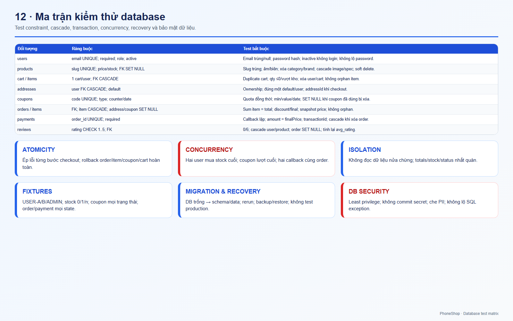
Constraint, cascade, transaction, concurrency và DB security.
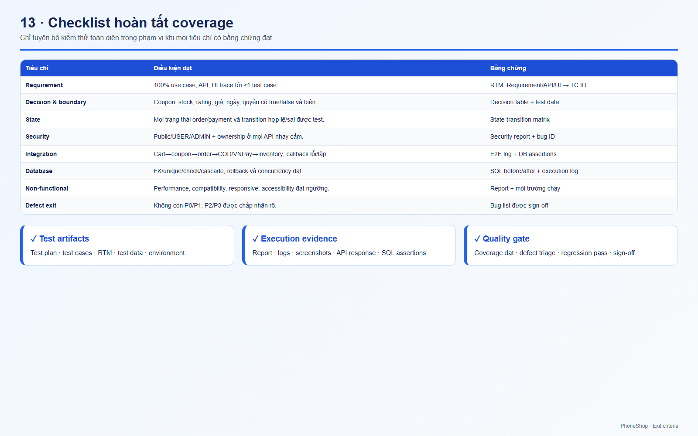
Coverage, bằng chứng kiểm thử và quality gate.